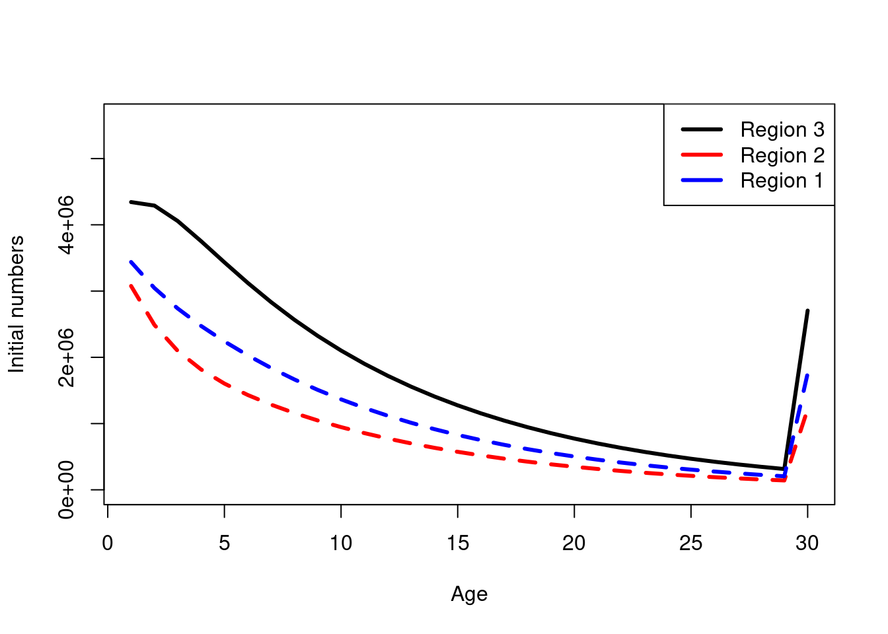
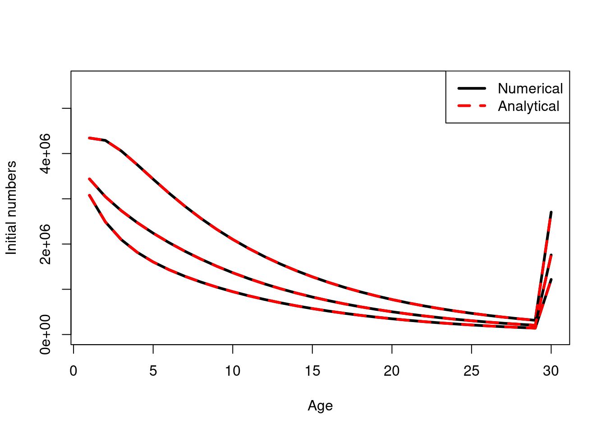

Chapter 7 Initialising the plus group in spatial models
In single area age-structured models, the plus age group is calculated using a solution to an infinite geometric series. This solution for an age-structured model is used to derive initial (equilibrium) state of the partition. The partition consists of a vector of numbers at age for each category denoted by \(\textbf{N}\); \[ \textbf{N} = (N_1, N_2, ... , N_{a_+})^T \]
where \(N_{a_+}\) denotes the numbers in the plus group. The numbers at age for a single area population with no density-dependent processes is derived as,
\[ N_a = \left\{ \begin{array}{lcl} R_0 & \mbox{for} & a = 1 \\ R_0e^{-aM} & \mbox{for} & 1 < a < a_+ \\ R_0e^{\sum_{i = a_+}^\infty-iM} & \mbox{for} & a = a_+ \end{array}\right. \]
Initialization for ages \(1 \leq a < a_+\) is easy, all you need to do is iterate the model \(a_+ - 1\) times and the age classes will be populated with there respected initial numbers at age. However, for the plus group (\(N_{a_+}\)) the solution is needed.
Although the plus group may start at let say 30 years old, it actually represents 30 and 31 and 32 up to some biological plausible value lets say 130, but mathematically can be thought of as \(\infty\). The plus group is modeled for practical reasons and care should be given when choosing the cut-off maximum age. The plus group is an infinite geometric series that is defined by the common ratio \(r_{a_+}\).
\[\begin{align} N_{a_+} &= R_0e^{\sum_{a = a_+}^\infty-aM}\\ &= R_0 \frac{e^{M - a_+M}}{1 - e^{-M}} \end{align}\]
M = 0.1
R0 = 4e6
plus_group_age = 30
N_age = R0 * exp(-M * 1:plus_group_age)
## numerically calculate it
N_plus_group = tail(N_age, n = 1)
for(i in 1:10000) {
N_plus_group = N_plus_group * exp(-M) + tail(N_age, n = 1) * exp(-M)
}
N_plus_group## [1] 1893568## using the geometric series calculation
R0 * exp(-M - plus_group_age*M) / (1 - exp(-M))## [1] 1893568The question becomes, how do we calculate this plus group when there is markovian movement as well as? This code shows how the same infinite geometric series solution works for the plus group with movement. Instead of using just natural mortality (\(M\)) you also need how much the plus group accumulates from the movement process. Let \(c\) denote the initial accumulation the plus group in a given region receives from ageing, natural mortality and movement. Then the plus group for that region can be
\[ N_{a+, r} = N_{a+ - 1, r} \frac{1}{1 - c} \] where, \(N_{a+ - 1, r}\) is the numbers at age for the second to last age cohort in the plus group. The following R code shows how this is equivalent to running the annual cycle for 1000 years.
M = 0.1
R0 = 4e6
n_regions = 3
movement_matrix = matrix(0, nrow = n_regions, ncol = n_regions);
movement_matrix[1,] = c(0.7, 0.2, 0.1)
movement_matrix[2,] = c(0.1, 0.6, 0.3)
movement_matrix[3,] = c(0.15, 0.05, 0.8)
## rows are "from" cols are "to"
plus_group_age = 30
## partition
N_age = matrix(0, nrow = n_regions, ncol = plus_group_age)
## initialise with no movement initially
N_age[1,] = R0 * exp(-M * 1:plus_group_age) ##
N_age[2,] = R0 * exp(-M * 1:plus_group_age) ##
N_age[3,] = R0 * exp(-M * 1:plus_group_age) ##
## apply an annual cycle 10000 times to see what the "initial conditions should be"
N_next_year_age = N_age
for(i in 1:1000) {
## recruitment
N_next_year_age[,1] = R0 * exp(-M)
## ageing and mortality
N_next_year_age[,2:plus_group_age] = N_age[,1:(plus_group_age - 1)] * exp(-M)
## plus group
N_next_year_age[,plus_group_age] = N_next_year_age[,plus_group_age] * exp(-M) + N_age[,plus_group_age] * exp(-M)
## movement
N_age = t(movement_matrix) %*% N_next_year_age
}
iterative_N_age = N_age
plot(1:plus_group_age, N_age[3,], xlab = "Age", ylab= "Initial numbers", ylim = c(0,R0* 1.4), type = "l", lwd = 3)
lines(1:plus_group_age, N_age[2,], lwd = 3, col = "red", lty = 2)
lines(1:plus_group_age, N_age[1,], lwd = 3, col = "blue", lty = 2)
legend('topright', col = c("black","red","blue"), legend = c("Region 3", "Region 2", "Region 1"), lwd = 3)
N_age = matrix(0, nrow = n_regions, ncol = plus_group_age)
update_N_age = N_age
for(i in 1:(plus_group_age)) {
# recruitment
update_N_age[,1] = R0 * exp(-M)
# ageing and mortality
update_N_age[,2:plus_group_age] = N_age[,1:(plus_group_age - 1)] * exp(-M)
# plus group
update_N_age[,plus_group_age] = update_N_age[,plus_group_age] * exp(-M) + N_age[,plus_group_age] * exp(-M)
# movement
N_age = t(movement_matrix) %*% update_N_age
}
## calculate one more annual cycle
# recruitment
update_N_age[,1] = R0 * exp(-M)
# ageing and mortality
update_N_age[,2:plus_group_age] = N_age[,1:(plus_group_age - 1)] * exp(-M)
# plus group
update_N_age[,plus_group_age] = update_N_age[,plus_group_age] * exp(-M) + N_age[,plus_group_age] * exp(-M)
# movement
update_N_age = t(movement_matrix) %*% update_N_age
## approximate!
c = update_N_age[,plus_group_age] / N_age[,plus_group_age] - 1
update_N_age[,plus_group_age] = N_age[,plus_group_age] * 1 / (1 - c)
iterative_N_age[,plus_group_age]## [1] 1758313 1217294 2705097update_N_age[,plus_group_age]## [1] 1758313 1217294 2705097plot(1:plus_group_age, iterative_N_age[3,], xlab = "Age", ylab= "Initial numbers", ylim = c(0,R0* 1.4), type = "l", lwd = 3)
lines(1:plus_group_age, update_N_age[3,], lwd = 3, col = "red", lty = 2)
lines(1:plus_group_age, iterative_N_age[2,], lwd = 3, col = "black", lty = 1)
lines(1:plus_group_age, update_N_age[2,], lwd = 3, col = "red", lty = 2)
lines(1:plus_group_age, iterative_N_age[1,], lwd = 3, col = "black", lty = 1)
lines(1:plus_group_age, update_N_age[1,], lwd = 3, col = "red", lty = 2)
legend('topright', col = c("black","red"), legend = c("Numerical", "Analytical"), lwd = 3, lty = c(1,2))